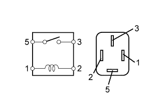
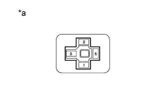

СИСТЕМА ОСВЕЩЕНИЯ > Цепь реле фар |
| 1.ВЫПОЛНИТЕ АКТИВНУЮ ДИАГНОСТИКУ С ПОМОЩЬЮ ПОРТАТИВНОГО ДИАГНОСТИЧЕСКОГО ПРИБОРА (РЕЛЕ ФАР) |
Выполните диагностику в режиме Active Test с помощью портативного диагностического прибора (Нажмите здесь).
| Информация на дисплее прибора | Испытываемое устройство | Диапазон регулирования | Замечание по диагностике |
| Headlight Relay | Реле фар ближнего света | ON (ВКЛ) / OFF (ВЫКЛ) | - |
|
| ||||
| OK | ||
| ||
| 2.ПРОВЕРЬТЕ РЕЛЕ ФАР (H-LP LO) |
|  |
Извлеките реле фар из блока реле моторного отсека.
Измерьте сопротивление в соответствии со значениями, приведенными в таблице ниже.
| Контакты для подключения диагностического прибора | Условие | Заданные условия |
| 3 - 5 | Напряжение аккумуляторной батареи не подается на контакты 1 и 2 | 10 кОм или более |
| 3 - 5 | Напряжение аккумуляторной батареи подается на контакты 1 и 2 | Менее 1 Ом |
|
| ||||
| OK | |
| 3.ПРОВЕРЬТЕ ЖГУТ ПРОВОДОВ И РАЗЪЕМ (РЕЛЕ ФАР (H-LP LO) - АККУМУЛЯТОРНАЯ БАТАРЕЯ) |
|  |
Измерьте напряжение в соответствии со значениями, приведенными в таблице.
| Контакты для подключения диагностического прибора | Условие | Заданные условия |
| Контакт 1 реле фар - масса | Всегда | 11 – 14 В |
| Контакт 5 реле фар - масса |
| *a | Вид спереди разъема со стороны жгута проводов: (к реле фар) |
|
| ||||
| OK | |
| 4.ПРОВЕРЬТЕ ЖГУТ ПРОВОДОВ И РАЗЪЕМ (РЕЛЕ ФАР (H-LP LO) - ГЛАВНЫЙ ЭБУ КУЗОВА) |
Снимите главный ЭБУ кузова (Нажмите здесь).
Измерьте сопротивление в соответствии со значениями, приведенными в таблице ниже.
| Контакты для подключения диагностического прибора | Условие | Заданные условия |
| Контакт 2 реле фар - A-15 (HRLY) | Всегда | Менее 1 Ом |
| A-15 (HRLY) - масса | Всегда | 10 кОм или более |
|
| ||||
| OK | ||
| ||